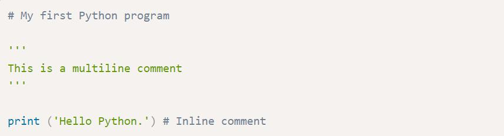
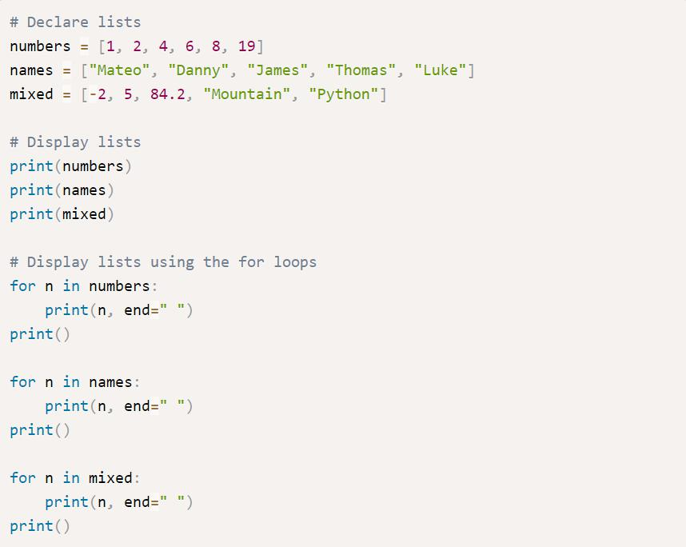

ภาษา Python เบื้องต้น
Python คืออะไร ?
Python เป็นภาษาเขียนโปรแกรมระดับสูงที่ใช้กันอย่างกว้างขวางใน การเขียนโปรแกรมสำหรับวัตถุประสงค์ทั่วไป ภาษา Python นั้นสร้างโดย Guido van Rossum และถูกเผยแพร่ครั้งแรกในปี 1991 Python นั้นเป็นภาษาแบบ interprete ที่ถูกออกแบบโดยมีปรัญชาที่จะทำให้โค้ด อ่านได้ง่ายขึ้น และโครงสร้างของภาษานั้นจะทำให้โปรแกรมเมอร์สามารถเข้า ใจแนวคิดการเขียนโค้ดโดยใช้บรรทัดที่น้อยลงกว่าภาษาอย่าง C++ และ Java ซึ่งภาษานั้นถูกกำหนดให้มีโครงสร้างที่ตั้งใจให้การเขียนโค้ดเข้าใจง่ายทั้งใน โปรแกรมเล็กไปจนถึงโปรแกรมขนาดใหญ่
เเล้วเราจะเขียนได้ยังไง ?
ในการติดตั้งภาษา Python คุณต้องไปที่หน้าดาวน์โหลดของภาษา
Python เพื่อดาวน์โหลดโปรแกรมลงคอมพิวเตอร์ของคุณก่อน
หน้าดาวน์โหลด Python
โครงสร้างของภาษา Python
Simple Python program
เพื่อเริ่มต้นการเรียนรู้ในภาษา Python มาดูตัวอย่างของโปรแกรมอย่างง่าย โดยเป็นโปรแกรมที่ถามชื่อผู้ใช้และแสดงข้อความทักทายทางหน้าจอ มาเริ่มเขียนโปรแกรมแรกในภาษา Python ของคุณ ให้คัดลอกโปรแกรมข้างล่างแล้วนำไปรันใน IDE
ในตัวอย่างเป็นโปรแกรมในการรับชื่อและแสดงข้อความทักทายออกทางหน้าจอ ในการรันโปรแกรมคุณสามารถรันได้หลายวิธี แต่ที่แนะนำคือการใช้ Python shell ให้คุณเปิด Python shell ขึ้นมาแล้วกดสร้างไฟล์ใหม่โดยไปที่ File -> New File จะปรากฏกล่อง Text editor ของภาษา Python ขึ้นมา เพื่อรันโปรแกรม Run -> Run Module หรือกด F5 โปรแกรมจะเปลี่ยนกลับไปยัง Python shell และเริ่มต้นทำงาน

นี่เป็นผลลัพธ์การทำงานในการรันโปรแกรม first.py จาก Python shell ในตัวอย่างเราได้กรอกชื่อเป็น "Mateo" และหลังจากนั้นโปรแกรมได้แสดงข้อความทักทายและจบการทำงาน ในตอนนี้คุณยังไม่ต้องกังวลว่าโปรแกรมในแต่ละบรรทัดนั้นทำงานยังไง ซึ่งเราจะอธิบายในต่อไป
Module
ในตัวอย่างโปรแกรมรับชื่อของเรา เป็นโปรแกรมแรกของเราในบทเรียน Python นี้ และเราได้บันทึกเป็นไฟล์ที่ชื่อว่า first.py ซึ่งไฟล์ของภาษา Python นั้นจะเรียกว่า Module ซึ่ง Module จะประกอบไปด้วยคลาส ฟังก์ชัน และตัวแปรต่างๆ และนอกจากนี้เรายังสามารถ import โมดูลอืนเข้ามาในโปรแกรมได้ ซึ่งโมดูลอาจจะอยู่ภายใน package ซึ่งเป็นเหมือน directory ของ Module ในตัวอย่าง first.py จึงเป็นโมดูลของโปรแกรมแรกของเรา
Comment
คอมเมนต์ในภาษา Python นั้นเริ่มต้นด้วยเครื่องหมาย # คอมเมนต์สามารถเริ่มต้นที่ตำแหน่งแรกของบรรทัดและหลังจากนั้นจะประกอบไปด้วย Whilespace หรือโค้ดของโปรแกรม หรือคำอธิบาย ซึ่งโดยทั่วไปแล้วคอมเมนต์มักจะใช้สำหรับอธิบายซอสโค้ดที่เราเขียนขึ้นและมันไม่มีผลต่อการทำงานของโปรแกรม นี่เป็นตัวอย่างการคอมเมนต์ในภาษา Python ในตัวอย่าง เราได้คอมมเมนต์สามแบบด้วยกัน แบบแรกเป็นการคอมเมนต์แบบ single line แบบที่สองเป็นการคอมเมนต์แบบ multiline line และแบบสุดท้ายเป็นการคอมมเมนต์แบบ inline หรือการคอมเมนต์ภายในบรรทัดเดียวกัน
Statement
Statement คือคำสั่งการทำงานของโปรแกรม แต่ละคำสั่งในภาษา Python นั้นจะแบ่งแยกด้วยการขึ้นบรรทัดใหม่ ซึ่งจะแตกต่างจากภาษา C และ Java ซึ่งใช้เครื่องหมายเซมิโคลอนสำหรับการจบคำสั่งการทำงาน แต่อย่างไรก็ตาม ในภาษา Python นั้นคุณสามารถมีหลายคำสั่งในบรรทัดเดียวกันได้โดยการใช้เครื่องหมายเซมิโคลอน ;
ในตัวอย่าง เรามี 4 คำสั่งในโปรแกรม สองบรรทัดแรกเป็นคำสั่งที่ใช้บรรทัดใหม่ในการจบคำสั่ง ซึ่งเป็นแบบปกติในภาษา Python และบรรทัดสุดท้ายเรามีสองคำสั่งในบรรทัดเดียวที่คั่นด้วยเครืองหมาย ; สำหรับการจบคำสั่ง
Indentation and while space
ในภาษา Python นั้นใช้ Whilespace และ Tab สำหรับกำหนดบล็อคของโปรแกรม เช่น คำสั่ง If Else For หรือการประกาศฟังก์ชัน ซึ่งคำสั่งเหล่านี้นั้นเป็นคำสั่งแบบบล็อค โดยจำนวนช่องว่างที่ใช้นั้นต้องเท่ากัน มาดูตัวอย่างของบล็อคคำสั่งในภาษา Python
ในตัวอย่าง เป็นบล็อคของโปรแกรมจากท 3 คำสั่ง ในคำสั่งแรกคือ If ในบล็อคนี้มีสองคำสั่งย่อยอยู่ภายใน ที่หัวของบล็อคนั้นจะต้องมีเครื่องหมาย : กำหนดหลังคำสั่งในการเริ่มต้นบล็อคเสมอ อีกสองบล็อคสุดท้ายนั้นเป็นคำสั่ง Else และ For ซึ่งมีหนึ่งคำสั่งย่อยอยู่ภายใน ในภาษา Python นี้เข้มงวดกับช่องว่างภายในบล็อคมาก นั้นหมายความว่าทุกคำสั่งย่อยภายในบล็อคนั้นต้องมีจำนวนช่องว่างเท่ากันเสมอ
นี่เป็นตัวอย่างการใช้งานช่องว่างที่ถูกต้องและไม่ถูกต้องภานในบล็อค ใสคำสั่ง If นั้นไม่ถูกเพราะทั้งสองคำสั่งมีจำนวนช่องว่างที่ไม่เท่ากัน สำหรับในคำสั่ง Else และ For นั้นถูกต้อง
Literals
ในการเขียนโปรแกรม Literal คือเครื่องหมายที่ใช้แสดงค่าของค่าคงที่ในโปรแกรม ในภาษา Python นั้นมี Literal ของข้อมูลประเภทต่างๆ เช่น Integer Floating-point number และ String หรือแม้กระทั่งตัวอักษรและ boolean นี่เป็นตัวอย่างของการกำหนด Literal ให้กับตัวแปรในภาษา Python
ในตัวอย่าง เป็นการกำหนด Literal ประเภทต่างๆ ให้กับตัวแปร ในค่าที่เป็นแบบตัวเลขนั้นสามารถกำหนดค่าลงไปโดยตรงได้ทันทีและสามารถกำหนดในรูปแบบสั้นได้อย่างในตัวแปร b และสำหรับ boolean นั้นจะเป็น True ส่วน String หรือ Character นั้นจะต้องอยู่ภายในเครื่องหมาย double quote หรือ single quote เสมอ
Expressions
Expression คือการทำงานร่วมกันระหว่างค่าตั้งแต่หนึ่งไปจนถึงหลายค่า โดยค่าเหล่านี้จะมีตัวดำเนินการสำหรับควบคุมการทำงาน ในภาษา Python นั้น Expression จะมีสองแบบคือ Boolean expression เป็นการกระทำกันของตัวแปรและตัวดำเนินการและจะได้ผลลัพธ์เป็นค่า Boolean โดยทั่วไปแล้วมักจะเป็นตัวดำเนินการเปรียบเทียบค่าและตัวดำเนินการตรรกศาสตร์ และ Expression ทางคณิตศาสตร์ คือการกระทำกันกับตัวดำเนินการและได้ค่าใหม่ที่ไม่ใช้ Boolean นี่เป็นตัวอย่างของ Expressions ในภาษา Python
ในตัวอย่าง เรามีตัวแปร a และ b และกำหนดค่าให้กับตัวแปรเหล่านี้และทำงานกับตัวดำเนินการประเภทต่างๆ ที่แสดง Expression ในรูปแบบของ Boolean expression ที่จะได้ผลลัพธ์สุดท้ายเป็นเพียงค่า True และ False เท่านั้น ส่วน Non-Boolean expression นั้นสามารถเป็นค่าใดๆ ที่ไม่ใช่ Boolean
นี่เป็นผลลัพธ์การทำงานของโปรแกรมในการทำงานของ Expression ในภาษา Python
Keywords
Keyword เป็นคำที่ถูกสงวนไว้ในการเขียนโปรแกรมภาษา Python เราไม่สามารถใช้คำสั่งเหล่านี้ในการตั้งชื่อตัวแปร ชื่อฟังก์ชัน คลาส หรือ identifier ใดๆ ที่กำหนดขึ้นโดยโปรแกรมเมอร์ นี่เป็นรายการของ Keyword ในภาษา Python

ตัวแปรและประเภทข้อมูล
ตัวแปร
ตัวแปร (variable) คือชื่อหรือเครื่องหมายที่กำหนดขึ้นสำหรับใช้เก็บค่าในหน่วยความจำ ตัวแปรจะมีชื่อ (identifier) สำหรับใช้ในการอ้างถึงข้อมูลของมัน ในการเขียนโปรแกรม ค่าของตัวแปรสามารถที่จะกำหนดได้ใน run-time หรือเปลี่ยนแปลงอยู่ตลอดเวลาในขณะที่โปรแกรมทำงาน (executing)
ในการเขียนโปรแกรมคอมพิวเตอร์นั้น ตัวแปรจะแตกต่างจากตัวแปรในทางคณิตศาสตร์ ค่าของตัวแปรนั้นไม่จำเป็นต้องประกอบไปด้วยสูตรหรือสมการที่สมบูรณ์เหมือนกับในคณิตศาสตร์ ในคอมพิวเตอร์ ตัวแปรนั้นอาจจะมีการทำงานซ้ำๆ เช่น การกำหนดค่าในที่หนึ่ง และนำไปใช้อีกที่หนึ่งในโปรแกรม และนอกจากนี้ยังสามารถกำหนดค่าใหม่ให้กับตัวแปรได้ตลอดเวลา ต่อไปเป็นตัวอย่างของการประกาศตัวแปรในภาษา Python
ในตัวอย่าง เราได้ทำการประกาศ 3 ตัวแปร ในการประกาศตัวแปรในภาษา Python คุณไม่จำเป็นต้องระบุประเภทของตัวแปรในตอนที่ประกาศเหมือนในภาษา C ในตัวแปร a มีค่าเป็น 3 และเป็นประเภทเป็น Integer ตัวแปร b มีค่าเป็น 4.92 และเป็นประเภทเป็น Float และตัวแปร c มีค่าเป็น "marcuscode.com" และเป็นประเภท String ภายหลังเราได้เปลี่ยนค่าของตัวแปร c เป็น 10.5 ตัวแปรกลายเป็นประเภท Float
ในภาษา Python นั้นสนับสนุนการกำหนดค่าให้กับตัวแปรหลายค่าในคำสั่งเดียว ในตัวอย่าง เป็นการกำหนดค่า 1 และ 2 กับตัวแปร a และ b ตามลำดับ และในคำสั่งต่อมาเป็นการกำหนดค่า 10 ให้กับตัวแปร x y และ z ซึ่งทำให้การเขียนโปรแกรมสะดวกและรวดเร็วมากขึ้น
นี่เป็นผลลัพธ์การทำงานของโปรแกรม
ต่อไปจะเป็นการพูดถึงประเภทข้อมูลชนิดต่างๆ ที่ภาษา Python สนับสนุน ซึ่งจะมีอยู่สามประเภทใหญ่ๆ คือ ข้อมูลแบบตัวเลข นั้นจะแบ่งย่อยออกเป็น Integer และ Float ข้อมูลประเภท String และข้อมูลแบบลำดับ เช่น List และ Tuple ประเภทข้อมูลทั้งหมดนี้เป็น Built-in type ในภาษา Python
Numbers
ในภาษา Python นั้นสนับสนุนข้อมูลแบบตัวเลข ซึ่งข้อมูลประเภทนี้จะแบ่งออกเป็น Integer Float Decimal และ Complex อย่างไรก็ตามเราจะเน้นย้ำใน Integer ซึ่งเป็นการเก็บข้อมูลแบบจำนวนเต็ม และ Float เป็นข้อมูลแบบจำนวนจริง สำหรับประเภทแบบ Decimal นั้นแตกต่างไปจาก Float คือสามารถเก็บความละเอียดของจุดทศนิยมได้มากกว่า นอกจากนี้ Python ยังสนุนตัวเลขในรูปแบบ Complex ที่แสดงในแบบ a +bj ต่อไปเป็นตวอย่างในการประกาศและใช้งานตัวแปรแบบตัวเลขในภาษา Python
ในตัวอย่าง เป็นการประกาศและใช้งานตัวแปรประเภท Integer เราได้ทำการประกาศตัวแปรและกำหนดค่าให้กับ a และ b ในการแสดงผลในรูปแบบของ String format กับฟังก์ชัน print() นั้นจะใช้ specifier เป็น %d เราสามารถกำหนดค่าให้กับตัวแปรได้โดย Literal หรือ Expression และการหารตัวเลขในภาษา Python นั้นจะได้ค่าเป็น Float เสมอ ถึงแม้ตัวเลขทั้งสองจะเป็น Integer ก็ตาม เช่นในตัวแปร d
นี่เป็นผลลัพธ์การทำงานของโปรแกรม
ต่อไปเป็นการประกาศและใช้งานตัวแปรประเภท Float หรือตัวเลขที่มีจุดทศนิยม ในการกำหนดค่าใก้กับตัวแปรนั้นเมื่อคุณกำหนดค่าที่มีจุดนั้นตัวเลขจะเป็นประเภท Float อัตโนมัติ เราสามารถกำหนดค่าโดยตรงหรือในรูปแบบของ Expression ได้ และนอกจากนี้ในภาษา Python ยังสามารถกำหนดในรูปแบบสัญกรณ์วิทยาศาสตร์ได้เหมือนในตัวแปร height ซึ่งหมายถึง 2.31 x 10 ^ 5 และในตัวแปร length ซึ่งหมายถึง 1.3 x 10 ^ -3
นี่เป็นผลลัพธ์การทำงานของโปรแกรม ซึ่งในการแสดงผลของข้อมูลประเภท Float กับการจัดรูปแบบของตัวเลขนั้นจะใช้ %f สำหรับการดูค่าเต็มของตัวเลขจริงๆ นั้นเราจะแสดงค่าของตัวเลขโดยเหมือนในคำสั่งแสดงผลค่าของ pi ในคำสั่งบรรทัดสุดท้าย
Strings
Strings นั้นเป็นประเภทข้อมูลที่สำคัญและใช้งานทั่วไปในการเขียนโปรแกรม ในภาษาเขียนโปรแกรมส่วนมากแล้วจะมีประเภทข้อมูลแบบ String และในภาษา Python เช่นกัน String เป็นลำดับของตัวอักษรหลายตัวเรียงต่อกัน ซึ่งในภาษา Python นั้น String จะอยู่ในเครื่องหมาย Double quote หรือ Single quote เท่านั้น นอกจากนี้ในภาษา Python ยังมีฟังก์ชันในการจัดการกับ String มากมายซึ่งเราจะพูดอีกครั้งในบทของ String ในบทนี้มาทำความรู้จักกับ String เบื้องต้นกันก่อน
ในตัวอย่าง เป็นการประกาศตัวแปรประเภท String สองตัวแปรแรกเป็นการประโดยการใช้ Double quote และสองตัวแปรต่อม่เป็นการใช้ Single quote ซึ่งคุณสามารถใช้แบบไหนก็ได้ แต่มีสิ่งที่แตกต่างกันเล็กน้อยคือเกี่ยวกับการกำหนดตัวอักพิเศษหรือเรียกว่า Escape character
ในตัวอย่าง เป็นสิ่งที่แตกต่างของการประกาศ String ทั้งสองแบบกับ Escape character ตัวอักษร ' และ " นั้นเป็น Escape character ดังนั้นในการใช้งานตัวอักษรเหล่านี้ เราจะต้องทำการใส่เครื่องหมาย \ ลงไปข้างหน้าเสมอ แต่ในภาษา Python เมื่อคุณใช้ Double quote ในการประกาศ String คุณไม่ต้องทำการ Escape character สำหรับ Single quote และในทางกลับกัน อย่างไรก็ตามเราจะพูดอีกครั้งในบทของ String
นี่เป็นผลลัพธ์การทำงานของโปรแกรมในการใช้งาน Escape character ในภาษา Python
การทำงานอย่างหนึ่งที่สำคัญเกี่ยวกับ String ก็คือการเชื่อมต่อ String ซึ่งเป็นการนำ String ตั้งต่อสองอันขึ้นไปมาต่อกัน ในภาษา Python คุณสามารถต่อ String ได้โดยการใช้เครื่องหมาย + หรือคั่นด้วยช่องว่างหรือบรรทัดใหม่เหมือนในตัวอย่างข้างบน
นี่เป็นผลลัพธ์การทำงานของโปรแกรม
อย่างไรก็ตาม นี่เป็นการแนะนำเกี่ยวกับ String ในเบื้องต้นเท่านั้น เพราะว่า String นั้นมีเนื้อหาเป็นจำนวนมาก คุณจะได้เรียนรู้เกี่ยวกับ String อย่างละเอียด อีกครั้งในบทของ String
Lists
Lists เป็นประเภทข้อมูลที่เก็บข้อมูลแบบเป็นชุดและลำดับ กล่าวคือมันสามารถเก็บข้อมูลได้หลายค่าในตัวแปรเดียว และมี Index สำหรับเข้าถึงข้อมูล ในภาษา Python นั้น List จะเป็นเหมือนอาเรย์ในภาษา C มันสามารถเก็บข้อมูลได้หลายตัวและยังสามารถเป็นประเภทข้อมูลที่แตกต่างกันได้อีกด้วย มาดูการประกาศและใช้งาน List ในเบื้องต้น
ในตัวอย่าง เราได้ทำการประกาศ 3 Lists โดยตัวแปรแรกนั้นเป็น List ของตัวเลข และตัวแปรที่สองเป็น List ของ String และตัวแปรสุดท้ายเป็น List แบบรวมกันของประเภทข้อมูล เราใช้ฟังก์ชัน print() ในการแสดงผลข้อมูลใน List และใช้คำสั่ง For loop ในการอ่านค่าในลิสต์และนำมาแสดงผลเช่นกัน
นี่เป็นผลการทำงานของโปรแกรม
Lists นั้นทำงานกับ Index ดังนั้นเราสามารถเข้าถึงข้อมูลของ List โดยการใช้ Index ของมันได้ ในตัวอย่างเป็นการเข้าถึงข้อมูบภายใน Index ซึ่ง Index ของ List นั้นจะเริ่มจาก 0 ไปจนถึงจำนวนทั้งหมดของมันลบด้วย 1 ในตัวอย่างเราได้แสดงผลข้อมูลของสอง List ในตำแหน่งแรกและในตำแหน่งที่ 4 ด้วย Index 0 และ 3 ตามลำดับ หลังจากนั้นเราเปลี่ยนค่าของ List ที่ตำแหน่งแรกเป็น "Scalar"
นี่เป็นผลลัพธ์การทำงานของโปรแกรม ซึ่งคุณได้ทำความรู้จักกับ List ในเบื้องต้น คุณจะได้เรียนรู้เกี่ยวกับ List ในภาษา Python อย่างละเอียดอีกครั้งในบทของ List ซึ่งเราจะพูดเกี่ยวกับการดำเนินการและการใช้ฟังก์ชันของ List นอกจากนี้ Python ยังมีประเภทข้อมูลแบบ Tuple และ Dictionary ซึ่งมีรูปแบบการเก็บข้อมูลคล้ายกับ List จึงคุณจะได้เรียนในบทต่อไป
ฟังก์ชันที่ใช้กับตัวแปร
ในภาษา Python นั้นมีฟังก์ชันที่สร้างมาเพื่อให้ใช้งานกับตัวแปร เช่น ฟังก์ชันสำหรับหาขนาดของตัวแปร ฟังก์ชันในการหาประเภทของตัวแปร ฟังก์ชันลบตัวแปรออกไปในหน่วยความจำ และฟังก์ชันในการตรวจสอบว่าตัวแปรมีอยู่หรือไม่ ซึ่งในบางครั้งการเขียนโปรแกรมก็จำเป็นที่คุณอาจจะต้องมีการตรวจสอบสิ่งเหล่านี้ในขณะที่โปรแกรมทำงาน นี่เป็นตัวอย่างการใช้งาน
ในตัวอย่าง เราได้ประกาศตัวแปรกับประเภทต่างๆ เราได้ฟังก์ชัน getsizeof() สำหรับหาขนาดของตัวแปรที่มีหน่วยเป็น Byte และฟังก์ชัน type() สำหรับประเภทของตัวแปรว่าอยู่ในคลาสไหน ฟังก์ชัน del() สำหรับยกเลิกหรือลบการประกาศตัวแปรออกไปจากหน่วยความจำ และสุดท้ายเป็นการตรวจสอบว่าตัวแปรถูกประกาศและหรือยังในฟังก์ชัน locals() สำหรับตรวจสอบตัวแปรในโมดูลปัจจึบัน หรือ globals() สำหรับตรวจสอบตัวแปรในโปรแกรมทั้งหมด
นี่เป็นผลลัพธ์การทำงานของโปรแกรมในการใช้ฟังก์ชันที่จำเป็นกับตัวแปร
การรับค่าและการแสดงผล
การแสดงผลด้วยฟังก์ชัน print()
ในการแสดงผลในภาษา Python นั้นจะใช้ฟังก์ชัน print() เพื่อแสดงผลข้อความ ตัวเลข หรือข้อมูลประเภทอื่นๆ ออกทางหน้าจอหรือสร้าง Http response นี่เป็นรูปแบบของการใช้งานฟังก์ชัน print() ในภาษา Python
ในรูปแบบการใช้งาน ฟังก์ชัน print() เราสามารถส่งอาร์กิวเมนต์ได้ตั้งแต่หนึ่งถึงหลายตัวเข้าไปในฟังก์ชัน นอกจากนี้ฟังก์ชันยังมี keyword อาร์กิวเมนต์ sep ซึ่งเป็นตัวแบ่งหากอาร์กิวเมนต์ที่ส่งเข้าไปนั้นมากกว่า 1 ตัว ซึ่งมีค่า default เป็น whitespace และ keyword อาร์กิวเมนต์ end เป็นการแสดงผลในตอนท้ายของฟังก์ชัน ซึ่งมีค่า default เป็น \n หมายถึงการขึ้นบรรทัดใหม่ มาดูตัวอย่างการใช้งานฟังก์ชันในตัวอย่าง เป็นการแสดงผลในภาษา Python โดยในคำสั่งแรกและคำสั่งที่สองนั้นเป็นการแสดงข้อความ และในคำสั่งที่สามเป็นการส่งค่าแบบหลายอาร์กิวเมนต์ และในสองคำสั่งสุดท้ายเป็นการแสดงผลข้อมูลจากตัวแปร name และตัวแปร year
นี่เป็นผลลัพธ์การทำงานของโปรแกรมนอกจากนี้ เรายังสามารถใช้ keyword อาร์กิวเมนต์สำหรับกำหนดการแสดงผลเพื่อแบ่งแต่ละอาร์กิวเมนต์ และการแสดงผลในตอนท้ายของฟังก์ชัน นี่เป็นตัวอย่างการใช้งาน
ในตัวอย่าง เป็นการใช้งาน keyword อาร์กิวเมนต์ในการจัดรูปแบบการแสดงผล โดยอาร์กิวเมนต์sep เป็นตัวแบ่งการแสดงในแต่ละอาร์กิวเมนต์ และ end เป็นตัวแบ่งการแสดงผลในแต่ละบรรทัด โดยปกติฟังก์ชัน print() จะขึ้นบรรทัดใหม่ทุกครั้ง เราสามารถใช้อาร์กิวเมนต์นี้เพื่อเปลี่ยนเป็นอย่างอื่นได้
นี่เป็นผลลัพธ์การทำงานของโปรแกรม
นอกจากนี้ฟังก์ชัน print() นั้นยังสามารถส่งพารามิเตอร์ในรูปแบบของ String Formatting ได้โดยการใช้รูปแบบการแปลงข้อมูล ที่คล้ายกับการจัดรูปแบบการแสดงผลในภาษา C นี่เป็นตัวอย่างการใช้งาน
ในตัวอย่าง เป็นการจัดรูปแบบการแสดงผลของ String โดยการแทรกรูปแบบของการแสดงผลใน String literal ได้ เช่น %s สำหรับการแสดงผล String %f สำหรับการแสดงผล Float และ %d สำหรับการแสดงผล Integer
นี่เป็นผลลัพธ์การทำงานของโปรแกรม สำหรับข้อมูลเพิ่มเติมเกี่ยวกับประเภทของการจัดรูปแบบ String คุณสามารถเรียนรู้เพิ่มเติมได้ที่เว็บไซต์ของ Python
เพราะว่าภาษา Python นั้นสามารถใช้กับการพัฒนาเว็บโดยสร้าง response ในรูปแบบ HTML หรือกำหนด Content type ประเภทต่างๆ ได้ ดังนั้นเราจึงสามารถใช้ฟังก์ชันนี้สำหรับการแสดงผลได้ อย่างไรก็ตามคุณต้องรันโค้ดนี้บนเว็บบราวน์เซอร์เพื่อดูผลลัพธ์ ไม่เช่นนั้นคำสั่งจะแสดงผลโค้ดของ HTML เหมือนที่เราเขียนลงในฟังก์ชันหากใช้แสดงบน Console นี่เป็นตัวอย่างการสร้างหน้าเว็บอย่างง่ายด้วยภาษา Python

การรับค่าจาก Keyboard ด้วยฟังก์ชัน input()
นอกจากการแสดงผลแล้วนั้น การติดต่อกับผู้ใช้ในอีกรูปแบบหนึ่งคือการรับค่า โดยทั่วไปแล้วมักจะเป็นการรับค่าทางคีย์บอร์ด ในภาษา Python เราใช้ฟังก์ชัน input() สำหรับการรับค่า String จากทางคีย์บอร์ด มาดูตัวอย่างการรับค่าจากผู้ใช้ในภาษา Python
ในตัวอย่าง เป็นสำหรับการรับค่าชื่อจากคีย์บอร์ดและแสดงข้อความทักทายชื่อดังกล่าว ฟังก์ชัน input() เราได้ส่งอาร์กิวเมนต์เข้าไปในฟังก์ชันเพื่อเป็นข้อความบอกวิธีการใส่ค่ากับผู้ใช้ ฟังก์ชันจะส่งค่ากลับเป็น String ที่ผู้ใช้กรอกเข้ามาและจบการรับค่าด้วยการขึ้นบรรทัดใหม่ โดยที่ \n จะถูกตัดออกไป
นี่เป็นผลลัพธ์การทำงานของโปรแกรม โดยเราได้กรอกชื่อ "Mateo" และโปรแกรมแสดงข้อความทักทายทางหน้าจอ
อย่างไรก็ตาม ในการรับค่าด้วยฟังก์ชัน input() นั้นจะใช้กับการรับค่าที่เป็น String เท่านั้น และในการที่จะรับข้อมูลประเภทอื่นๆ เช่น ตัวเลข เราสามารถใช้ฟังก์ชันที่มากับภาษา Python ในการแปลงข้อมูลจาก String ไปเป็นข้อมูลประเภทอื่นได้ ต่อไปมาดูตัวอย่างการรับค่าตัวเลขในภาษา Python
ในตัวอย่าง เป็นโปรแกรมในการรับค่าตัวเลขสองตัวจากคีย์บอร์ด เราใช้ฟังก์ชัน int() เพื่อแปลงข้อมูลแบบ String ให้เป็น Integer และนำมาใส่ในตัวแปร a และ b ตามลำดับ หลังจากนั้นเราแสดงผลบวกของตัวเลขทั้งสอง
นี่เป็นผลลัพธ์การทำงานของโปรแกรม เราได้กรอกตัวเลขสองตัวและโปรแกรมแสดงผลรวมออกมา ในตัวอย่างคุณเห็นว่าเราสามารถใช้ฟังก์ชัน input() ในการรับค่าตัวเลขโดยการใช้ฟังก์ชัน int() ในการแปลง คุณสามารถรับค่าตัวเลขแบบอื่นได้เช่นกัน เช่น การใช้ฟังก์ชัน float() สำหรับแปลงข้อมูลแบบทศนิยม